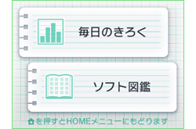
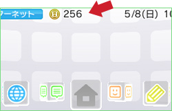

「毎日のきろく」から、ニンテンドー3DSと一緒に歩いた歩数のグラフを見ることができます。グラフは1日／1週間／1カ月／1年ごとの表示に切り替えることもでき、最大で約10年分もの記録を残しておくことが可能です。また、歩数の記録以外に、ニンテンドー3DSでどのくらいの時間ゲームをプレイしたかも同じようにグラフで表示することができます。
3DSの電源がONの状態で、本体の蓋を閉じていれば、歩数の記録は自動的に行われるので、「思い出きろく帳」をずっと起動している必要はありません。いつも一緒に3DSを持ち歩いてさえいれば、特に何もしなくてもいいのでカンタン、というよりラクチンです。

ふと気づいたときに「毎日のきろく」を見るだけで、自分が運動不足なのかどうかわかって便利なので、ぜひ覚えておいてほしい機能です。ただし、本体の蓋が開いているときや、バッテリーが切れてしまったとき、電源がオフのときは記録できないので、注意しましょう。

ニンテンドー3DSを持ち歩いて100歩歩くごとに「ゲームコイン」を1枚ゲットできます。ゲームコインは1日10枚まで、最大300枚ためることができ、HOMEメニューのいちばん上に現在の枚数が表示されます。ゲームコインは対応ソフトで使用することができ、たとえばアイテムと交換できたり、隠しステージをプレイすることができたりするので、その点でも、3DSはできるだけ一緒に持ち歩いておくのがオススメです！